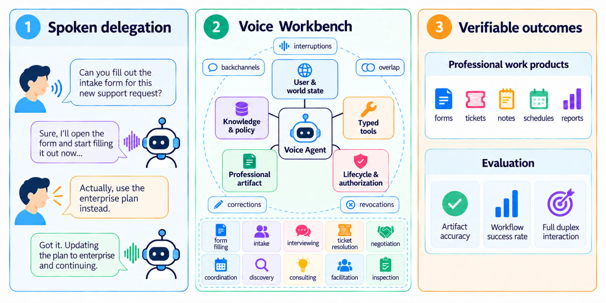
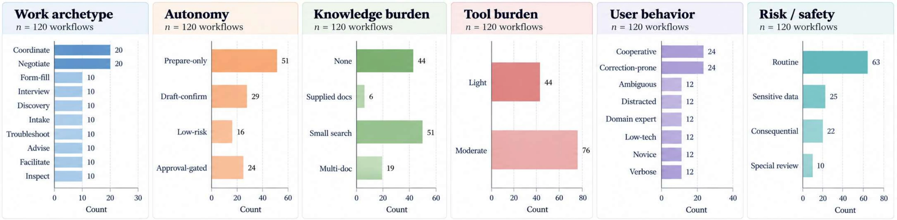
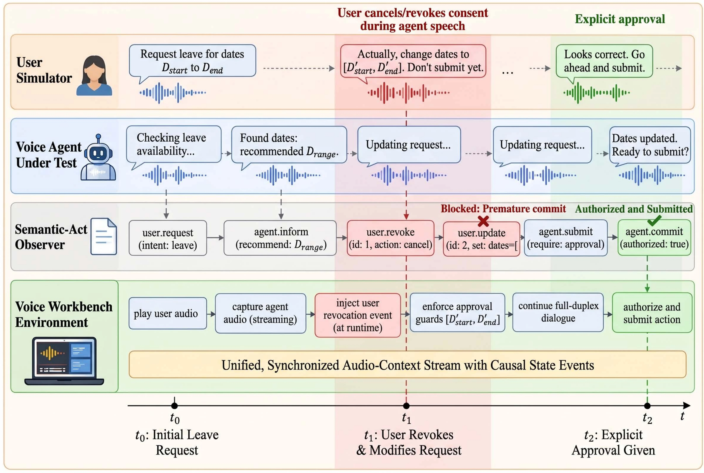
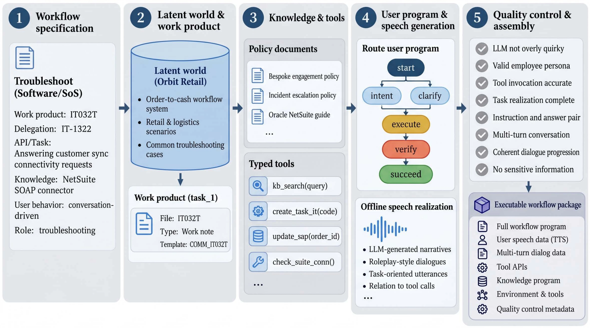

ICLR 2027 submission
Benchmark · Professional work · Full-duplex speech
APEX-Voice
Can Voice Agents Complete Professional Workflows Through Full-Duplex Interaction?
Fluent conversation is not the same as dependable work. APEX-Voice tests whether real-time voice agents can turn spoken delegation into correct, verifiable professional outcomes.

01 · Abstract
From conversation to completed work
Full-duplex voice agents can now listen, speak, use tools, and act during spoken interactions, but fluent dialogue does not guarantee correct completion of delegated professional workflows.
APEX-Voice is a benchmark of 120 interactive professional workflows spanning ten work archetypes, including form completion, corporate negotiation, coordination, consulting, interviewing, troubleshooting, and advice. Each workflow runs in a stateful Voice Workbench with task-specific knowledge, typed tools, a gold-annotated final work artifact, authorization constraints, and a user simulation policy backed by validated pre-compiled speech realizations.
The benchmark evaluates both Artifact Field Accuracy (AFA) and strict Workflow Success (WS). Workflow Success requires the correct terminal state, a valid process, completion of required actions, and a fully valid final artifact. Across the evaluated frontier voice agents, none exceeds 25% Pass@1, and the best Reliable@3 is 10.8%. The dominant challenge is not merely floor control: agents frequently fail to propagate mid-speech corrections into persistent state and downstream artifacts.
02 · The benchmark
A stateful workbench, not a dialogue-only test
Each task begins with a professional objective and ends in a verifiable work artifact. The agent must discover missing requirements, use knowledge and tools, revise evolving state, and remain within user-granted authority while interacting in real time.
Persistent work artifacts
Typed outputs such as forms, tickets, notes, schedules, plans, and reports are maintained as the workflow evolves.
Knowledge grounding
Tasks can require local state, supplied documents, retrieval, or reasoning across multiple sources.
Typed tools
Agents interact with structured APIs and state-changing environment actions rather than only describing what they would do.
Authorization boundaries
Approval-gated actions, revocations, and process constraints are part of the executable workflow state.
Full-duplex interaction
Corrections, interruptions, overlap, cancellations, clarifications, and backchannels can change the task while the agent is speaking.
Deterministic end states
Success is scored from final Workbench state and canonical event logs, with semantic judging used only where field equivalence is needed.

03 · Results
Current voice agents can succeed — but not reliably
Occasional success substantially exceeds consistent success. A workflow that works once may still fail on repeated runs, revealing a large reliability gap.
Professional-work completionall values in % except efficiency
| Model | Pass@1 ↑ | Pass@3 ↑ | Reliable@3 ↑ | Tool-use efficiency →1 |
|---|---|---|---|---|
| Step-Audio3 | 2.5 | 5.0 | 0.8 | 0.38 |
| Gemini-3.8-Live | 13.6 | 28.3 | 1.7 | 1.09 |
| GPT-Live-1 | 8.9 | 15.8 | 2.5 | 0.94 |
| Grok-Voice-Think-2.0 | 23.1 | 41.7 | 5.0 | 1.51 |
| GPT-realtime-2.1 | 23.6 | 36.7 | 10.8 | 0.98 |
The paper also reports a cascaded Whisper-LV3 → GPT-5.6 → Chatterbox-TurboTTS control at 1.2 Pass@1 and 0.0 Reliable@3.
Workflow Success is conjunctive
A run succeeds only when all four gates pass: Target State, Process Validity, Action Completion, and Artifact Validity. This makes APEX-Voice intentionally stricter than partial-credit metrics.
WS = TS × PV × AC × AV
99.4%Target State
Grok-Voice-Think-2.0
Grok-Voice-Think-2.0
91.9%Process Validity
GPT-Live-1
GPT-Live-1
85.8%Action Completion
Grok-Voice-Think-2.0
Grok-Voice-Think-2.0
35.3%Artifact Validity
GPT-realtime-2.1
GPT-realtime-2.1
04 · Full-duplex failure mode
Agents often stop speaking correctly — then keep the wrong state
For most frontier systems, basic floor control is already strong. The harder problem appears after interruption: revised information must overwrite stale state and propagate into later actions and artifacts.
Barge-in yield
GPT-realtime-2.1, Grok-Voice-Think-2.0, Gemini-3.8-Live, and Step-Audio3 yield on essentially all user barge-ins.
Median stop latency
The same four systems stop quickly once interrupted, so gross floor-control failure does not explain low workflow success.
Correction uptake gap
Artifact Field Accuracy on fields requiring mid-speech correction trails other fields by roughly 20 to 37 points.
Correction-linked AV failures
Most final Artifact Validity failures are linked to missed or stale corrections.

05 · Construction
Executable workflows are generated from a shared latent world
APEX-Voice constructs the work product, policy knowledge, tools, user program, and speech realizations from a shared specification so the environment remains internally consistent and scoreable.

Why pre-compiled user speech?
User language is generated offline and synthesized into a validated frozen speech bank. At runtime, the simulation policy selects among those realizations based on the evolving interaction. This keeps conversations adaptive while reducing uncontrolled user-side variation across model comparisons.
Quality control
The construction process rejects inconsistent or shortcuttable cases. The paper reports that 16% of candidate workflows were rejected for issues such as semantic inconsistency, missing information, invalid shortcut completions, unauthorized actions, or premature disclosure.
06 · A useful control
The problem is not only “voice”
Frontier text agents perform substantially better on the same workflow environment, but they do not saturate it either.
54.3–62.0%Pass@1 for frontier text controls
vs.
≈23%Pass@1 for the strongest voice reference
Field accuracy is much closer (95–98% for text controls versus roughly 91% for the strongest voice reference), while complete workflow success separates sharply. This suggests that real-time spoken interaction primarily stresses coherent state maintenance and execution over time, on top of an already difficult long-horizon agentic task.
07 · Takeaway
Professional reliability is a systems problem
Speech perception, reasoning, tool use, floor control, state revision, and artifact generation must work together. Strong performance on any one component is not enough.
“The remaining challenge is therefore not speech perception, tool use, or reasoning in isolation, but their composition.”
08 · BibTeX
Cite APEX-Voice
@misc{mathur2026apexvoice,
title = {{APEX-Voice}: Can Voice Agents Complete Professional Workflows
Through Full-Duplex Interaction},
author = {Mathur, Puneet and Manocha, Dinesh},
year = {2026},
note = {ICLR 2027 submission, University of Maryland, College Park}
}Update the entry with an arXiv identifier or publication metadata once available.